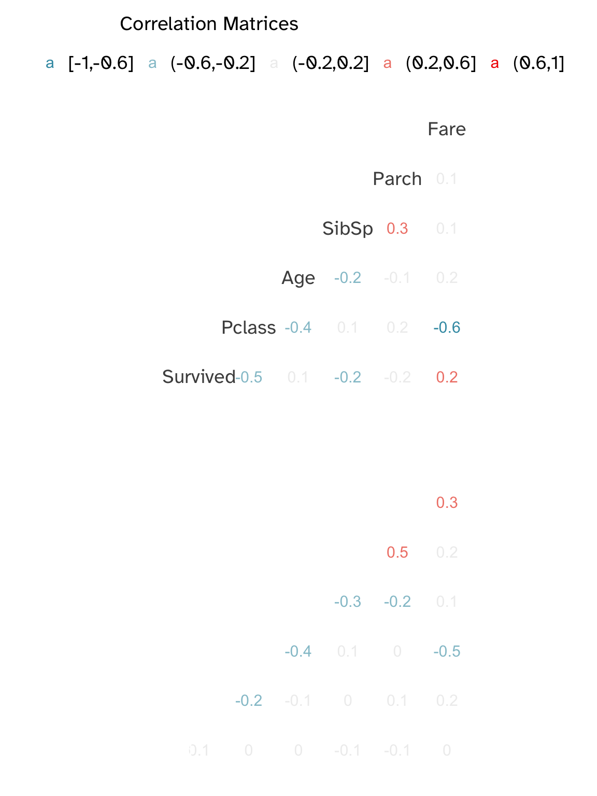

Code
source("helper_functions.R")Part 1: Data Exploration and Logit in R
source("helper_functions.R")train_data <- data_loader(
"titanic.zip",
"train.csv"
)
test_data <- data_loader(
"titanic.zip",
"test.csv"
)train_data %>% str'data.frame': 891 obs. of 12 variables:
$ PassengerId: int 1 2 3 4 5 6 7 8 9 10 ...
$ Survived : int 0 1 1 1 0 0 0 0 1 1 ...
$ Pclass : int 3 1 3 1 3 3 1 3 3 2 ...
$ Name : chr "Braund, Mr. Owen Harris" "Cumings, Mrs. John Bradley (Florence Briggs Thayer)" "Heikkinen, Miss. Laina" "Futrelle, Mrs. Jacques Heath (Lily May Peel)" ...
$ Sex : chr "male" "female" "female" "female" ...
$ Age : num 22 38 26 35 35 NA 54 2 27 14 ...
$ SibSp : int 1 1 0 1 0 0 0 3 0 1 ...
$ Parch : int 0 0 0 0 0 0 0 1 2 0 ...
$ Ticket : chr "A/5 21171" "PC 17599" "STON/O2. 3101282" "113803" ...
$ Fare : num 7.25 71.28 7.92 53.1 8.05 ...
$ Cabin : chr "" "C85" "" "C123" ...
$ Embarked : chr "S" "C" "S" "S" ...test_data %>% str'data.frame': 418 obs. of 11 variables:
$ PassengerId: int 892 893 894 895 896 897 898 899 900 901 ...
$ Pclass : int 3 3 2 3 3 3 3 2 3 3 ...
$ Name : chr "Kelly, Mr. James" "Wilkes, Mrs. James (Ellen Needs)" "Myles, Mr. Thomas Francis" "Wirz, Mr. Albert" ...
$ Sex : chr "male" "female" "male" "male" ...
$ Age : num 34.5 47 62 27 22 14 30 26 18 21 ...
$ SibSp : int 0 1 0 0 1 0 0 1 0 2 ...
$ Parch : int 0 0 0 0 1 0 0 1 0 0 ...
$ Ticket : chr "330911" "363272" "240276" "315154" ...
$ Fare : num 7.83 7 9.69 8.66 12.29 ...
$ Cabin : chr "" "" "" "" ...
$ Embarked : chr "Q" "S" "Q" "S" ...Some variables might benefit from scaling: Fare and Age.
train_data <- train_data %>%
mutate(
Age = scale(Age),
Fare = scale(Fare),
SibSp = scale(SibSp),
Parch = scale(Parch),
Sex = ifelse(
Sex == "male",
"Male",
ifelse(Sex == "female",
"Female",
NA
)
)
)
test_data <- test_data %>%
mutate(
Age = scale(Age),
Fare = scale(Fare),
SibSp = scale(SibSp),
Parch = scale(Parch),
Sex = ifelse(
Sex == "male",
"Male",
"Female"
)
)train_data %>% summary PassengerId Survived Pclass Name
Min. : 1.0 Min. :0.0000 Min. :1.000 Length:891
1st Qu.:223.5 1st Qu.:0.0000 1st Qu.:2.000 Class :character
Median :446.0 Median :0.0000 Median :3.000 Mode :character
Mean :446.0 Mean :0.3838 Mean :2.309
3rd Qu.:668.5 3rd Qu.:1.0000 3rd Qu.:3.000
Max. :891.0 Max. :1.0000 Max. :3.000
Sex Age.V1 SibSp.V1 Parch.V1
Length:891 Min. :-2.01557 Min. :-0.474279 Min. :-0.473408
Class :character 1st Qu.:-0.65908 1st Qu.:-0.474279 1st Qu.:-0.473408
Mode :character Median :-0.11697 Median :-0.474279 Median :-0.473408
Mean : 0.00000 Mean : 0.000000 Mean : 0.000000
3rd Qu.: 0.57143 3rd Qu.: 0.432550 3rd Qu.:-0.473408
Max. : 3.46270 Max. : 6.780355 Max. : 6.970233
NA's :177
Ticket Fare.V1 Cabin Embarked
Length:891 Min. :-0.648058 Length:891 Length:891
Class :character 1st Qu.:-0.488874 Class :character Class :character
Mode :character Median :-0.357190 Mode :character Mode :character
Mean : 0.000000
3rd Qu.:-0.024233
Max. : 9.661740
In the test data we do not have the dependent variable. Therefore, we need to split the dataset and use cross-validation to estimate the error.
N_train_obs <- dim(train_data)[1]
train_idx <- sample(
N_train_obs,
N_train_obs*.5
)as.factorfactorize_data <- function(dataframe) {
dataframe %>%
select(-Name, -Ticket) %>%
mutate(
Pclass = as.factor(Pclass),
Sex = as.factor(Sex),
# SibSp = as.factor(SibSp),
# Parch = as.factor(Parch),
Cabin = as.factor(Cabin),
Embarked = as.factor(Embarked)
)
}train_data_factorized <- factorize_data(dataframe = train_data)
test_data_factorized <- factorize_data(dataframe = test_data)train_data_factorized %>% summary PassengerId Survived Pclass Sex Age.V1
Min. : 1.0 Min. :0.0000 1:216 Female:314 Min. :-2.01557
1st Qu.:223.5 1st Qu.:0.0000 2:184 Male :577 1st Qu.:-0.65908
Median :446.0 Median :0.0000 3:491 Median :-0.11697
Mean :446.0 Mean :0.3838 Mean : 0.00000
3rd Qu.:668.5 3rd Qu.:1.0000 3rd Qu.: 0.57143
Max. :891.0 Max. :1.0000 Max. : 3.46270
NA's :177
SibSp.V1 Parch.V1 Fare.V1 Cabin
Min. :-0.474279 Min. :-0.473408 Min. :-0.648058 :687
1st Qu.:-0.474279 1st Qu.:-0.473408 1st Qu.:-0.488874 B96 B98 : 4
Median :-0.474279 Median :-0.473408 Median :-0.357190 C23 C25 C27: 4
Mean : 0.000000 Mean : 0.000000 Mean : 0.000000 G6 : 4
3rd Qu.: 0.432550 3rd Qu.:-0.473408 3rd Qu.:-0.024233 C22 C26 : 3
Max. : 6.780355 Max. : 6.970233 Max. : 9.661740 D : 3
(Other) :186
Embarked
: 2
C:168
Q: 77
S:644
quantiles_table <- train_data %>%
factorize_data() %>%
group_by(
Sex,
Pclass
) %>%
reframe(
Age_Quantiles = quantile(
de_scale(
Age
),
probs = c(
.25,
.5,
.75
),
na.rm = T
) %>%
round(
.,
digits = 0
)
) %>%
mutate(
Quantile = rep(
c(
.25,
.50,
.75
),
6
)
)quantiles_table# A tibble: 18 × 4
Sex Pclass Age_Quantiles Quantile
<fct> <fct> <dbl> <dbl>
1 Female 1 23 0.25
2 Female 1 35 0.5
3 Female 1 44 0.75
4 Female 2 22 0.25
5 Female 2 28 0.5
6 Female 2 36 0.75
7 Female 3 14 0.25
8 Female 3 22 0.5
9 Female 3 30 0.75
10 Male 1 30 0.25
11 Male 1 40 0.5
12 Male 1 51 0.75
13 Male 2 23 0.25
14 Male 2 30 0.5
15 Male 2 37 0.75
16 Male 3 20 0.25
17 Male 3 25 0.5
18 Male 3 33 0.75cor_bygender_female <- train_data %>%
filter(
Sex == "Female"
) %>%
GGally::ggcorr(
method = c(
"complete.obs",
"pearson"
),
geom = "text",
layout.exp = .3,
nbreaks = 5,
color = "grey30",
legend.position = "top"
) Registered S3 method overwritten by 'GGally':
method from
+.gg ggplot2Warning in GGally::ggcorr(., method = c("complete.obs", "pearson"), geom =
"text", : data in column(s) 'Name', 'Sex', 'Ticket', 'Cabin', 'Embarked' are
not numeric and were ignoredWarning in textData$x[1:layout.exp] <- spacer: number of items to replace is
not a multiple of replacement lengthcor_bygender_male <- train_data %>%
filter(
Sex == "Male"
) %>%
GGally::ggcorr(
method = c(
"complete.obs",
"pearson"
),
geom = "text",
layout.exp = 1,
nbreaks = 5,
color = "white",
legend.position = "none"
)Warning in GGally::ggcorr(., method = c("complete.obs", "pearson"), geom =
"text", : data in column(s) 'Name', 'Sex', 'Ticket', 'Cabin', 'Embarked' are
not numeric and were ignoredcor_bygender_female / cor_bygender_male
train_data %>%
factorize_data() %>%
ggplot(
aes(
fill = factor(
ifelse(
Survived == 1,
"Yes",
"No"
)
),
x = de_scale(SibSp),
y = Age/100
)
) +
geom_bar(
width = .7,
stat = "identity"
) +
geom_hline(
yintercept = mean(
train_data$Age,
na.rm = T
), col="grey99",
lwd = 1,
) +
facet_wrap(
vars(
Sex,
ifelse(
Pclass == 1,
"First Class",
ifelse(
Pclass == 2,
"Second Class",
"Third Class"
)
)
)
) +
scale_color_viridis_d(
aesthetics = c(
"colour",
"fill"),
option = "A",
begin = .6,
end = 0
) +
labs(
title = "Survivorship on the Titanic based on Number of Siblings, Age, Class, and Gender",
fill = "Survived",
x = "Number of Siblings",
y = "Age (Normalized)"
) +
theme(
legend.position = "top"
)
train_data %>%
factorize_data() %>%
mutate(
Survived = factor(
ifelse(
Survived == 1,
"Yes",
"No"
)
),
Sex = ifelse(
Sex == "male",
"Male",
"Female"
),
PClass = ifelse(
Pclass == 1,
"First Class",
ifelse(
Pclass == 2,
"Second Class",
"Third Class"
)
)
) %>%
ggplot(
aes(
x = Survived,
y = Age %>% de_scale()
)
) +
geom_tufteboxplot(
median.type = "line",
whisker.type = "point",
na.rm = T
) +
coord_flip() +
facet_grid(
vars(
Sex,
Pclass)
) +
scale_color_viridis_d(
aesthetics = c(
"colour",
"fill"),
option = "A",
begin = .6,
end = 0
) +
labs(
title = "Distributions of Survivorship | Age, Sex, Class",
y = "Age"
) +
theme(
legend.position = "top"
)
fit_full <- glm(
Survived ~ .,
data = train_data_factorized,
family = "binomial",
na.action = na.omit,
subset = train_idx
)fit_full %>% summary
Call:
glm(formula = Survived ~ ., family = "binomial", data = train_data_factorized,
subset = train_idx, na.action = na.omit)
Coefficients:
Estimate Std. Error z value Pr(>|z|)
(Intercept) 2.859e+00 9.335e-01 3.062 0.002197 **
PassengerId -6.127e-04 6.813e-04 -0.899 0.368498
Pclass2 -1.478e+00 8.684e-01 -1.702 0.088794 .
Pclass3 -2.934e+00 9.368e-01 -3.132 0.001737 **
SexMale -3.145e+00 4.061e-01 -7.743 9.74e-15 ***
Age -7.748e-01 2.261e-01 -3.426 0.000612 ***
SibSp -1.028e+00 3.013e-01 -3.411 0.000648 ***
Parch 1.629e-01 1.843e-01 0.884 0.376818
Fare 2.441e-01 7.522e-01 0.325 0.745492
CabinA10 -1.904e+01 1.075e+04 -0.002 0.998588
CabinA31 2.013e+01 1.075e+04 0.002 0.998507
CabinA34 1.709e+01 1.075e+04 0.002 0.998732
CabinA36 -1.915e+01 1.075e+04 -0.002 0.998579
CabinA6 1.874e+01 1.075e+04 0.002 0.998610
CabinB18 1.644e+01 7.212e+03 0.002 0.998182
CabinB19 -1.853e+01 1.075e+04 -0.002 0.998625
CabinB20 1.630e+01 1.075e+04 0.002 0.998791
CabinB22 -6.973e-01 3.613e+00 -0.193 0.846971
CabinB3 1.579e+01 1.075e+04 0.001 0.998828
CabinB30 -1.812e+01 1.075e+04 -0.002 0.998655
CabinB35 1.604e+01 1.075e+04 0.001 0.998810
CabinB37 -1.787e+01 1.075e+04 -0.002 0.998674
CabinB38 -1.913e+01 1.075e+04 -0.002 0.998581
CabinB39 1.573e+01 1.075e+04 0.001 0.998833
CabinB4 1.720e+01 1.075e+04 0.002 0.998724
CabinB49 1.655e+01 1.075e+04 0.002 0.998772
CabinB5 1.522e+01 1.075e+04 0.001 0.998871
CabinB50 1.996e+01 1.075e+04 0.002 0.998519
CabinB51 B53 B55 1.763e+01 1.075e+04 0.002 0.998692
CabinB57 B59 B63 B66 1.619e+01 1.075e+04 0.002 0.998799
CabinB58 B60 -2.439e+00 3.444e+00 -0.708 0.478887
CabinB73 1.572e+01 1.075e+04 0.001 0.998834
CabinB80 1.737e+01 1.075e+04 0.002 0.998712
CabinB86 -2.014e+01 1.075e+04 -0.002 0.998506
CabinB96 B98 1.842e+01 1.075e+04 0.002 0.998633
CabinC103 1.723e+01 1.075e+04 0.002 0.998721
CabinC104 2.031e+01 1.075e+04 0.002 0.998493
CabinC110 -1.941e+01 1.075e+04 -0.002 0.998560
CabinC111 -1.937e+01 1.075e+04 -0.002 0.998562
CabinC123 1.680e+01 1.075e+04 0.002 0.998753
CabinC124 -1.924e+01 1.075e+04 -0.002 0.998573
CabinC125 1.656e+01 1.075e+04 0.002 0.998771
CabinC148 1.980e+01 1.075e+04 0.002 0.998531
CabinC22 C26 -2.480e+01 1.075e+04 -0.002 0.998160
CabinC23 C25 C27 -9.890e-01 3.529e+00 -0.280 0.779265
CabinC30 -1.864e+01 1.075e+04 -0.002 0.998617
CabinC32 1.632e+01 1.075e+04 0.002 0.998789
CabinC45 1.622e+01 1.075e+04 0.002 0.998797
CabinC49 -2.163e+01 1.075e+04 -0.002 0.998395
CabinC62 C64 1.607e+01 1.075e+04 0.001 0.998807
CabinC68 -1.982e-01 2.393e+00 -0.083 0.933989
CabinC70 1.831e+01 1.075e+04 0.002 0.998641
CabinC78 -1.743e+01 1.075e+04 -0.002 0.998707
CabinC82 -2.089e+01 1.075e+04 -0.002 0.998450
CabinC83 -9.870e-01 2.240e+00 -0.441 0.659530
CabinC85 1.748e+01 1.075e+04 0.002 0.998703
CabinC86 -1.771e+01 1.075e+04 -0.002 0.998686
CabinC90 1.634e+01 1.075e+04 0.002 0.998787
CabinC93 1.692e+01 1.075e+04 0.002 0.998745
CabinC99 1.563e+01 1.075e+04 0.001 0.998841
CabinD11 1.800e+01 1.075e+04 0.002 0.998665
CabinD15 1.634e+01 1.075e+04 0.002 0.998788
CabinD17 1.722e+01 1.075e+04 0.002 0.998722
CabinD20 1.858e+01 7.604e+03 0.002 0.998050
CabinD26 -1.935e+01 1.075e+04 -0.002 0.998564
CabinD33 2.153e+01 1.075e+04 0.002 0.998403
CabinD35 1.917e+01 6.719e+03 0.003 0.997724
CabinD36 1.671e+01 1.075e+04 0.002 0.998760
CabinD48 -1.858e+01 1.075e+04 -0.002 0.998622
CabinD50 -1.825e+01 1.075e+04 -0.002 0.998646
CabinD56 2.065e+01 1.075e+04 0.002 0.998468
CabinD7 1.834e+01 1.075e+04 0.002 0.998639
CabinD9 1.538e+01 1.075e+04 0.001 0.998859
CabinE101 1.748e+01 1.075e+04 0.002 0.998703
CabinE121 1.888e+01 1.075e+04 0.002 0.998599
CabinE24 1.995e+01 1.075e+04 0.002 0.998520
CabinE31 -1.858e+01 1.075e+04 -0.002 0.998621
CabinE34 1.727e+01 1.075e+04 0.002 0.998719
CabinE44 -1.814e+01 1.075e+04 -0.002 0.998654
CabinE46 -1.910e+01 1.075e+04 -0.002 0.998583
CabinE50 2.024e+01 1.075e+04 0.002 0.998499
CabinE63 -1.912e+01 1.075e+04 -0.002 0.998581
CabinE67 1.702e+01 1.075e+04 0.002 0.998737
CabinE77 -1.993e+01 1.075e+04 -0.002 0.998521
CabinE8 1.719e+01 1.075e+04 0.002 0.998725
CabinF G63 -1.616e+01 1.075e+04 -0.002 0.998801
CabinF G73 -1.741e+01 7.601e+03 -0.002 0.998172
CabinF2 5.297e-01 1.506e+00 0.352 0.724992
CabinF33 1.717e+01 1.075e+04 0.002 0.998726
CabinF4 1.780e+01 1.075e+04 0.002 0.998679
CabinG6 -2.196e+01 1.075e+04 -0.002 0.998371
EmbarkedQ 2.308e-01 9.846e-01 0.234 0.814656
EmbarkedS 6.099e-01 6.421e-01 0.950 0.342248
---
Signif. codes: 0 '***' 0.001 '**' 0.01 '*' 0.05 '.' 0.1 ' ' 1
(Dispersion parameter for binomial family taken to be 1)
Null deviance: 478.28 on 360 degrees of freedom
Residual deviance: 213.40 on 268 degrees of freedom
(84 observations deleted due to missingness)
AIC: 399.4
Number of Fisher Scoring iterations: 18fit_null <- glm(
Survived ~ 1,
data = train_data_factorized,
family = "binomial",
na.action = na.omit,
subset = train_idx
)sel_stepwise <- step(
fit_full,
scope = c(fit_null, fit_full),
direction = "both",
k = log(
dim(train_data_factorized)[1]
)
)Start: AIC=845.09
Survived ~ PassengerId + Pclass + Sex + Age + SibSp + Parch +
Fare + Cabin + Embarked
Df Deviance AIC
- Cabin 82 284.47 359.18
- Embarked 2 214.46 832.56
- Fare 1 213.55 838.44
- Parch 1 214.19 839.08
- PassengerId 1 214.21 839.11
<none> 213.40 845.09
- Pclass 2 229.03 847.14
- Age 1 226.87 851.77
- SibSp 1 229.68 854.58
- Sex 1 293.07 917.97
Step: AIC=359.18
Survived ~ PassengerId + Pclass + Sex + Age + SibSp + Parch +
Fare + Embarked
Df Deviance AIC
- Embarked 2 284.96 346.09
- PassengerId 1 284.55 352.47
- Parch 1 284.64 352.56
- Fare 1 284.70 352.63
<none> 284.47 359.18
- SibSp 1 298.62 366.54
- Age 1 303.26 371.19
- Pclass 2 320.60 381.74
- Sex 1 393.15 461.07
Step: AIC=346.09
Survived ~ PassengerId + Pclass + Sex + Age + SibSp + Parch +
Fare
Df Deviance AIC
- PassengerId 1 285.08 339.42
- Fare 1 285.11 339.45
- Parch 1 285.12 339.46
<none> 284.96 346.09
- SibSp 1 298.63 352.97
- Age 1 303.46 357.79
- Pclass 2 321.80 369.35
- Sex 1 393.58 447.92
Step: AIC=339.42
Survived ~ Pclass + Sex + Age + SibSp + Parch + Fare
Df Deviance AIC
- Parch 1 285.23 332.78
- Fare 1 285.24 332.79
<none> 285.08 339.42
- SibSp 1 298.64 346.18
- Age 1 303.55 351.09
- Pclass 2 321.80 362.55
- Sex 1 393.61 441.16
Step: AIC=332.78
Survived ~ Pclass + Sex + Age + SibSp + Fare
Df Deviance AIC
- Fare 1 285.49 326.24
<none> 285.23 332.78
- SibSp 1 299.42 340.17
- Age 1 303.89 344.65
- Pclass 2 321.87 355.84
- Sex 1 397.59 438.34
Step: AIC=326.24
Survived ~ Pclass + Sex + Age + SibSp
Df Deviance AIC
<none> 285.49 326.24
- SibSp 1 299.42 333.39
- Age 1 305.19 339.15
- Pclass 2 343.58 370.75
- Sex 1 400.34 434.30sel_stepwise %>% summary()
Call:
glm(formula = Survived ~ Pclass + Sex + Age + SibSp, family = "binomial",
data = train_data_factorized, subset = train_idx, na.action = na.omit)
Coefficients:
Estimate Std. Error z value Pr(>|z|)
(Intercept) 2.9597 0.4000 7.400 1.36e-13 ***
Pclass2 -1.2745 0.4189 -3.043 0.002343 **
Pclass3 -2.9036 0.4332 -6.702 2.05e-11 ***
SexMale -3.0672 0.3334 -9.199 < 2e-16 ***
Age -0.7426 0.1779 -4.174 2.99e-05 ***
SibSp -0.7229 0.2150 -3.363 0.000771 ***
---
Signif. codes: 0 '***' 0.001 '**' 0.01 '*' 0.05 '.' 0.1 ' ' 1
(Dispersion parameter for binomial family taken to be 1)
Null deviance: 478.28 on 360 degrees of freedom
Residual deviance: 285.49 on 355 degrees of freedom
(84 observations deleted due to missingness)
AIC: 297.49
Number of Fisher Scoring iterations: 5sel_stepwise <- update(
sel_stepwise,
formula = Survived ~ Pclass*Sex*Age,
subset = train_idx
)
sel_stepwise %>% summary()
Call:
glm(formula = Survived ~ Pclass + Sex + Age + Pclass:Sex + Pclass:Age +
Sex:Age + Pclass:Sex:Age, family = "binomial", data = train_data_factorized,
subset = train_idx, na.action = na.omit)
Coefficients:
Estimate Std. Error z value Pr(>|z|)
(Intercept) 3.0133 0.7550 3.991 6.57e-05 ***
Pclass2 -0.1249 1.1864 -0.105 0.916172
Pclass3 -3.2747 0.8238 -3.975 7.03e-05 ***
SexMale -2.9011 0.8641 -3.357 0.000787 ***
Age 0.8519 0.8418 1.012 0.311557
Pclass2:SexMale -1.6601 1.3264 -1.252 0.210714
Pclass3:SexMale 0.9243 0.9775 0.946 0.344347
Pclass2:Age -2.2564 1.2124 -1.861 0.062737 .
Pclass3:Age -1.1091 0.8950 -1.239 0.215230
SexMale:Age -2.0852 0.9368 -2.226 0.026019 *
Pclass2:SexMale:Age 2.5654 1.3515 1.898 0.057667 .
Pclass3:SexMale:Age 2.1551 1.0592 2.035 0.041883 *
---
Signif. codes: 0 '***' 0.001 '**' 0.01 '*' 0.05 '.' 0.1 ' ' 1
(Dispersion parameter for binomial family taken to be 1)
Null deviance: 478.28 on 360 degrees of freedom
Residual deviance: 280.33 on 349 degrees of freedom
(84 observations deleted due to missingness)
AIC: 304.33
Number of Fisher Scoring iterations: 6convert_to_prob <- function(logit) {
exp(logit)/(1+exp(logit))
}sel_stepwise %>% coef() %>% convert_to_prob() (Intercept) Pclass2 Pclass3 SexMale
0.95316944 0.46882079 0.03644864 0.05210164
Age Pclass2:SexMale Pclass3:SexMale Pclass2:Age
0.70096005 0.15975047 0.71591585 0.09480063
Pclass3:Age SexMale:Age Pclass2:SexMale:Age Pclass3:SexMale:Age
0.24803133 0.11053987 0.92859896 0.89614085 predictions <-
ifelse(
predict(
sel_stepwise,
newdata = train_data_factorized[-train_idx, ],
type = "response"
) > 0.7293,
1,
0
)
pROC::roc(
train_data_factorized[-train_idx, ]$Survived,
predictions,
)Setting levels: control = 0, case = 1Setting direction: controls < cases
Call:
roc.default(response = train_data_factorized[-train_idx, ]$Survived, predictor = predictions)
Data: predictions in 199 controls (train_data_factorized[-train_idx, ]$Survived 0) < 154 cases (train_data_factorized[-train_idx, ]$Survived 1).
Area under the curve: 0.7284pROC::ggroc(
pROC::roc(
train_data_factorized[-train_idx, ]$Survived,
predictions,
)
) +
geom_abline(
aes(
slope = 1,
intercept = 1
),
color = "grey90"
)Setting levels: control = 0, case = 1Setting direction: controls < cases
mean(predictions == train_data_factorized[-train_idx, ]$Survived, na.rm = TRUE )[1] 0.7592068csvpredictions_test <- ifelse(
predict(
sel_stepwise,
newdata = test_data_factorized,
type = "response"
) > 0.7293,
1,
0
)submission <- data.frame(
PassengerId = test_data %>%
select(PassengerId),
Survived = predictions_test
)submission %>% head PassengerId Survived
1 892 0
2 893 0
3 894 0
4 895 0
5 896 0
6 897 0if(submission_flag == T) {
write.csv(
submission,
"data/submission.csv",
row.names = FALSE
)
}Score: 0.6244
This result is awful: as expected, the logistic regression is highly interpretable but suffers from high bias and therefore has low prediction capabilities.